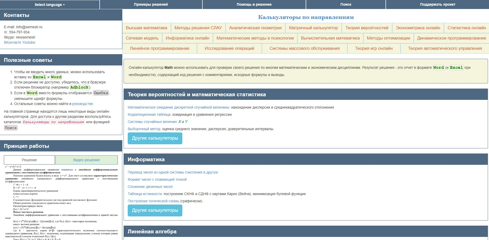

— это сайт-сервис, который позволяет нам производить различные вычисления прямо в окне браузера без установки какого бы то ни было программного обеспечения. Естественно, что в Windows имеется встроенный калькулятор, но он подходит только для простых расчетов. В настоящее время почти каждый имеет доступ к калькулятору под рукой. В большинстве телефонов есть встроенное приложение-калькулятор, и для множества повседневных ситуаций этого более чем достаточно, чтобы помочь вам, если вы застряли в затруднительном положении. Но не все калькуляторы одинаковы. Научные калькуляторы и графические калькуляторы намного мощнее, чем то, что вы, вероятно, найдете враньем у себя дома или на телефоне по умолчанию.
1. Mathway
— это калькулятор с простым интерфейсом, но очень универсальный, когда дело доходит до вычислений.
Для выполнения вычислений можно использовать кнопки приложения, можно указать инструкцию (правда, на английском языке), и затем получить результаты.
Пошаговое решение доступно только по подписке, но это не обязательно, если вам просто нужны результаты.
В левом верхнем меню можно выбрать раздел:
Элементарная математика
Основы алгебры
Алгебра
Тригонометрия
Основы мат. анализа
Математический анализ
Статистика
Конечная математика
Линейная алгебра
Химия
2. Maths-semestr
— онлайн-калькулятор Math можно использовать для проверки своего решения по многим математическим и экономическим дисциплинам. Результат решения - это отчет в формате Word и Exсel содержащий ход решения с комментариями, исходные формулы и выводы.
Теория вероятностей и математическая статистика
Информатика
Линейная алгебра
Методы решения СЛАУ
Методы оптимизации
Аналитическая геометрия
Математический сервис
Линейное программирование
Целочисленное программирование
Динамическое программирование
Модели теории игр
Системы и модели массового обслуживания
Статистика
Эконометрика

3. Photomath
— удобное приложение для решения математических задач и примеров. Утилита обладает ненавязчивым и простым интерфейсом, всё что требуется от владельца устройства - это навести камеру на требуемый математический пример.
Математический анализ
Алгебра
Сложение и вычитание
Тригонометрия
Дроби
Текстовые задачи
Статистика
Деленеие в столбик
Геометрия
Функции
Умножение
Пределы и интегралы
Элементарная математика
и многое другое!
4. Mathforyou
— На сайте представлено более 90 калькуляторов с помощью которых можно находить решение интегралов, производных, пределов, дифференциальных уравнений, строить графики функций, выполнять различные операции над матрицами: сложение, вычитание, умножение, транспонирование, возводить квадратную матрицу в степень, находить определитель, ранг, след, обратную матрицу, приводить матрицу к верхнетреугольному виду, а также находить ее собственные числа и вектора, получать решение алгебраических уравнений любой степени и любых систем линейных алгебраических уравнений (СЛАУ). Также на нашем сайте можно найти уравнение касательной, разложить функцию в ряд Тейлора, и многое другое.
В данном разделе представлены онлайн калькуляторы для решения различных математических задач: